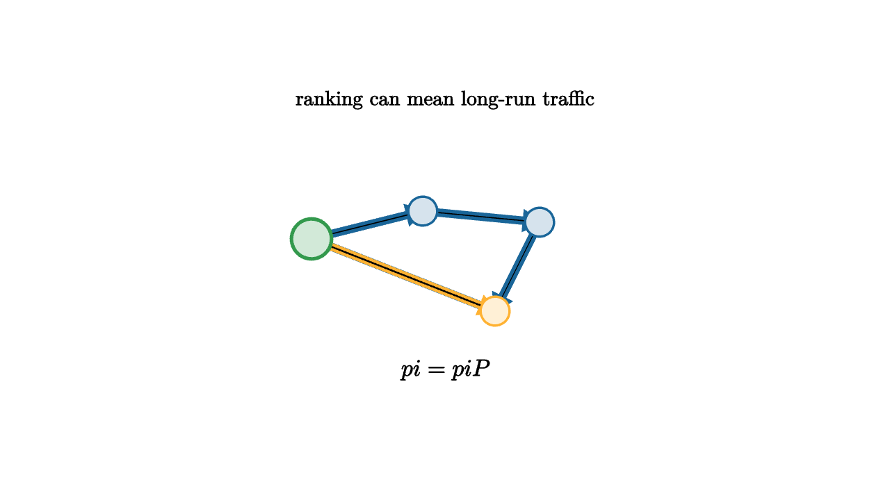

A ranking can be built from votes, scores, or expert judgment. A different kind of ranking comes from movement. If many paths through a network keep arriving at the same node, that node has importance by flow. This is the idea behind Markov-chain ranking.
A Markov chain has states and transition probabilities. If the chain is at state $i$, the number $P_{ij}$ gives the probability of moving to state $j$ next. Each row of $P$ sums to 1. A probability distribution $p_t$ evolves by
After many steps, some chains settle into a stationary distribution $\pi$ satisfying
The entries of $\pi$ measure long-run flow.

source
let soft = |col, amount| lerp(WHITE, col, amount)
mesh chain = [
center{1.35u} Text("ranking can mean long-run traffic", 0.66),
stroke{BLUE, 3} Arrow(1.2l + 0.1u, 0.2l + 0.35u),
stroke{BLUE, 3} Arrow(0.2l + 0.35u, 0.85r + 0.25u),
stroke{BLUE, 3} Arrow(0.85r + 0.25u, 0.45r + 0.55d),
stroke{BLUE, 3} Arrow(0.45r + 0.55d, 1.2l + 0.1u),
stroke{ORANGE, 2.5} Arrow(1.2l + 0.1u, 0.45r + 0.55d),
center{1.2l + 0.1u} fill{soft(GREEN, 0.22)} stroke{GREEN, 3} Circle(0.18),
center{0.2l + 0.35u} fill{soft(BLUE, 0.18)} stroke{BLUE, 2} Circle(0.13),
center{0.85r + 0.25u} fill{soft(BLUE, 0.18)} stroke{BLUE, 2} Circle(0.13),
center{0.45r + 0.55d} fill{soft(ORANGE, 0.2)} stroke{ORANGE, 2} Circle(0.13),
center{1.08d} Tex("\\pi = \\pi P", 0.76)
]PageRank is the famous example. A web page is important if important pages link to it. This sounds circular, and the Markov chain makes the circle precise. Imagine a random surfer who follows links most of the time and occasionally jumps to a random page. The stationary distribution of that surfer gives a ranking.
The jump is important. A web graph can contain dead ends and isolated communities. The damped transition matrix
keeps the chain moving through the whole network. The parameter $\alpha$ is often close to 0.85, which means links dominate while random jumps keep the mathematics stable.
source
let soft = |col, amount| lerp(WHITE, col, amount)
"One Step"
mesh scene = [
center{1.3u} Text("one step spreads probability along arrows", 0.62),
center{1.25l} fill{soft(ORANGE, 0.2)} stroke{ORANGE, 3} Circle(0.18),
center{0.15l + 0.45u} fill{soft(BLUE, 0.16)} stroke{BLUE, 2} Circle(0.13),
center{0.25r + 0.45d} fill{soft(BLUE, 0.16)} stroke{BLUE, 2} Circle(0.13),
center{1.25r} fill{soft(BLUE, 0.16)} stroke{BLUE, 2} Circle(0.13),
stroke{BLUE, 3} Arrow(1.1l, 0.25l + 0.35u),
stroke{BLUE, 3} Arrow(1.1l, 0.15r + 0.35d)
]
play Fade(0.8)
"Many Steps"
scene = [
center{1.3u} Text("repeated flow approaches equilibrium", 0.62),
center{1.25l} fill{soft(BLUE, 0.16)} stroke{BLUE, 2} Circle(0.13),
center{0.15l + 0.45u} fill{soft(BLUE, 0.16)} stroke{BLUE, 2} Circle(0.13),
center{0.25r + 0.45d} fill{soft(GREEN, 0.22)} stroke{GREEN, 3} Circle(0.2),
center{1.25r} fill{soft(ORANGE, 0.24)} stroke{ORANGE, 3} Circle(0.24),
center{1.08d} Text("larger circles hold more stationary mass", 0.62)
]
play Trans(0.9)
"Teleport"
scene = [
center{1.3u} Text("random jumps keep every state reachable", 0.62),
stroke{RED, 3} Arrow(1.35r + 0.75d, 1.2l + 0.7u),
stroke{RED, 3} Arrow(1.35l + 0.75d, 1.25r + 0.7u),
center{0r} Tex("G=\\alpha P+(1-\\alpha)J", 0.62)
]
play Trans(0.8)The same mathematics appears outside web search. A basketball team can be ranked by imagined possession flow from losers to winners. A recommendation system can rank items by random walks through a user-item graph. A language model can use Markov chains as a simple historical model of which word follows which word, even though modern models are far richer.
Stationary distributions are eigenvectors in disguise. Writing $\pi=\pi P$ says that $\pi$ is a left eigenvector with eigenvalue 1. Power iteration computes it by repeated multiplication:
The ranking is a story about persistence. Nodes score highly when flow keeps returning to them, either because many edges point there or because influential parts of the graph feed them.
The teacher's warning is simple: flow rankings inherit the graph. If links reflect popularity, PageRank rewards popularity. If the network underrepresents a group, the stationary flow can underrepresent it too. The linear algebra is clean, while the input graph is a social or measurement object. A good analysis reads both.